<title>Larder World first games</title>
<meta name="claude:viewport-fit-sides" content="cover">
<link rel="preconnect" href="https://fonts.googleapis.com">
<link rel="stylesheet" href="https://fonts.googleapis.com/css2?family=Inter:wght@400;600&family=Space+Grotesk:wght@500;700&display=swap">
<style>
/* Layout: one reading column; each hand is a row of three moments of one game, its counts under it. Colours come from the dish: mould amber, crystal cyan, agar ink. */
:root {
  --bg: #f3f5f6; --fg: #182024; --muted: #56646b; --line: #d5dde0;
  --panel: #ffffff; --amber: #a86a12; --cyan: #127a93; --win: #2f7d4a; --loss: #a8402c;
  --display: "Space Grotesk", "Segoe UI", system-ui, sans-serif;
  --body: "Inter", "Segoe UI", system-ui, sans-serif;
}
@media (prefers-color-scheme: dark) { :root:not([data-theme="light"]) {
  --bg: #0b1114; --fg: #e3eaec; --muted: #93a3aa; --line: #22303a;
  --panel: #111a1f; --amber: #e2a95a; --cyan: #8cebff; --win: #7fd19a; --loss: #f0937e; color-scheme: dark } }
:root[data-theme="dark"] {
  --bg: #0b1114; --fg: #e3eaec; --muted: #93a3aa; --line: #22303a;
  --panel: #111a1f; --amber: #e2a95a; --cyan: #8cebff; --win: #7fd19a; --loss: #f0937e; color-scheme: dark }
body { background: var(--bg); color: var(--fg); font-family: var(--body); line-height: 1.55;
  padding-left: max(16px, env(safe-area-inset-left, 0px)); padding-right: max(16px, env(safe-area-inset-right, 0px)); padding-block: 28px 48px; }
main { max-width: 1060px; margin: 0 auto; display: grid; gap: 40px; }
h1, h2 { font-family: var(--display); text-wrap: balance; margin: 0; }
h1 { font-size: 1.9rem; }
h2 { font-size: 1.3rem; }
p { margin: 0; max-width: 68ch; }
.lede { color: var(--muted); }
section { display: grid; gap: 14px; }
.row { display: grid; grid-template-columns: repeat(3, 1fr); gap: 10px; }
.pair { display: grid; grid-template-columns: 1fr 1fr; gap: 12px; }
figure { margin: 0; display: grid; gap: 6px; min-width: 0; }
figure img { width: 100%; border-radius: 4px; border: 1px solid var(--line); display: block; }
figcaption { font-size: 0.9rem; color: var(--muted); }
figcaption b { color: var(--fg); font-weight: 600; }
.counts { font-size: 0.9rem; color: var(--muted); font-variant-numeric: tabular-nums; }
.counts b { color: var(--fg); font-weight: 600; }
.tag { font-family: var(--display); font-size: 0.78rem; letter-spacing: 0.06em; text-transform: uppercase; color: var(--amber); }
.tag.c { color: var(--cyan); }
.scroll { overflow-x: auto; }
table { border-collapse: collapse; font-variant-numeric: tabular-nums; font-size: 0.92rem; min-width: 560px; }
th, td { text-align: left; padding: 6px 14px 6px 0; border-bottom: 1px solid var(--line); }
th { font-weight: 600; color: var(--muted); font-size: 0.82rem; }
td.w { color: var(--win); font-weight: 600; }
td.l { color: var(--loss); font-weight: 600; }
.note { font-size: 0.9rem; color: var(--muted); border-left: 2px solid var(--line); padding-left: 12px; }
.key { display: flex; flex-wrap: wrap; gap: 6px 18px; font-size: 0.88rem; color: var(--muted); }
.key span::before { content: ""; display: inline-block; width: 10px; height: 10px; border-radius: 2px; margin-right: 6px; vertical-align: -1px; background: var(--sw); }
code { font-size: 0.88em; }
@media (max-width: 720px) { .row, .pair { grid-template-columns: 1fr; } }
</style>
<main>
  <header style="display:grid;gap:10px">
    <h1>Larder World first games</h1>
    <p class="lede">The squad's rules from the small-dish Larder (M3) now play on the Larder World: a mould that grows from one crystal, 23 crystals that run dry, rock and wet ground, walls. These are games on the CPU world (512 × 320, 5,000 starting walkers), each a fixed hand played to the 15-minute cap or a wipe. Every picture is the simulation; only the marks below are drawn on it. W2b, 2026-11-11.</p>
    <div class="key">
      <span style="--sw:#ffffff">soldier (white dot)</span>
      <span style="--sw:#ff3c3c">a shot this frame, to the slime it hit</span>
      <span style="--sw:#ffdc3c">the larder (yellow ring)</span>
      <span style="--sw:#9aa0a6">a wall (grey)</span>
      <span style="--sw:#8cebff">crystal, brightness is charge left</span>
    </div>
  </header>

  <section>
    <span class="tag">Held-out census</span>
    <h2>Idle and random lose; farming beats both on every seed</h2>
    <p>Sixteen held-out seeds, each hand to the cap or a wipe. Farm and wall score higher than idle and random on all 16 (sign test p &lt; 0.0001, holding after a correction for six comparisons). No hand wipes the mould: a farming squad ends holding 27-64% of the contested crystals, one wall across the mould's road adds nothing over farming (6 seeds better, 7 worse), and a rush dies. Means are per game; harvest and kills are means over the 16 games.</p>
    <div class="scroll"><table>
      <thead><tr><th>Hand</th><th>Mean score</th><th>Squad wiped</th><th>Reached the cap</th><th>Beats idle</th><th>Beats random</th><th>Food harvested</th><th>Walkers killed</th></tr></thead>
      <tbody>
        <tr><td>idle</td><td>−0.779</td><td>5 (274-432 s)</td><td>11, holding 6-17%</td><td>·</td><td>·</td><td>0</td><td>216</td></tr>
        <tr><td>random</td><td>−1.373</td><td>12 (98-894 s)</td><td>4</td><td>·</td><td>·</td><td>956</td><td>856</td></tr>
        <tr><td>farm</td><td>−0.027</td><td>0</td><td>16, holding 27-64%</td><td class="w">16 of 16</td><td class="w">16 of 16</td><td>22,725</td><td>3,072</td></tr>
        <tr><td>wall</td><td>−0.021</td><td>0</td><td>16</td><td class="w">16 of 16</td><td class="w">16 of 16</td><td>22,331</td><td>2,811</td></tr>
        <tr><td>rush</td><td>−1.874</td><td>16 (10 by 36 s)</td><td>0</td><td class="l">0 of 16</td><td class="l">2 of 16</td><td>0</td><td>899</td></tr>
      </tbody>
    </table></div>
    <p class="note">Score: a squad win is above 1, a game that reaches the cap is the squad's share of the held crystals minus 0.5 (so from −0.5 to +0.5), and a squad wipe is below −1, sooner is worse. Seeds 1-4 were used to find and fix faults, so the gate is on seeds 5-20.</p>
  </section>

  <section>
    <span class="tag">Seed 5, idle</span>
    <h2>Do nothing, and the mould takes the map</h2>
    <div class="row">
      <figure>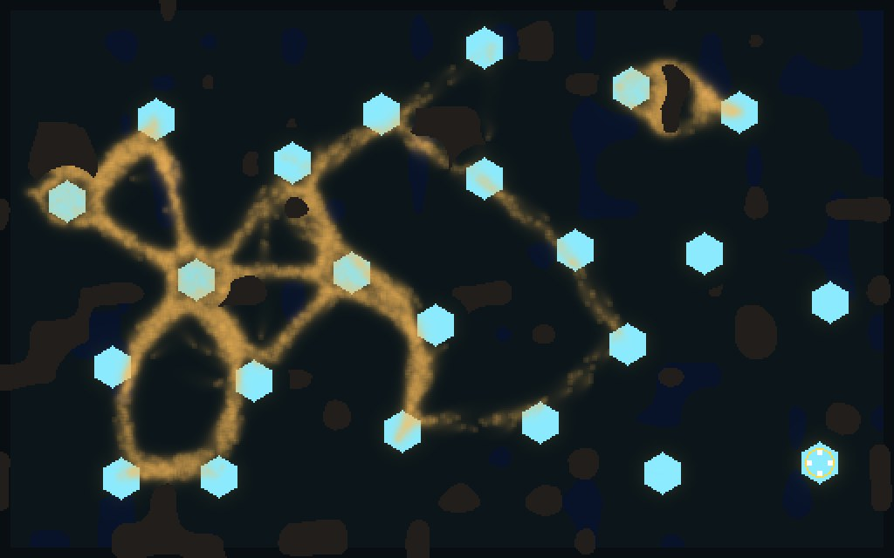<figcaption><b>150 s</b></figcaption></figure>
      <figure>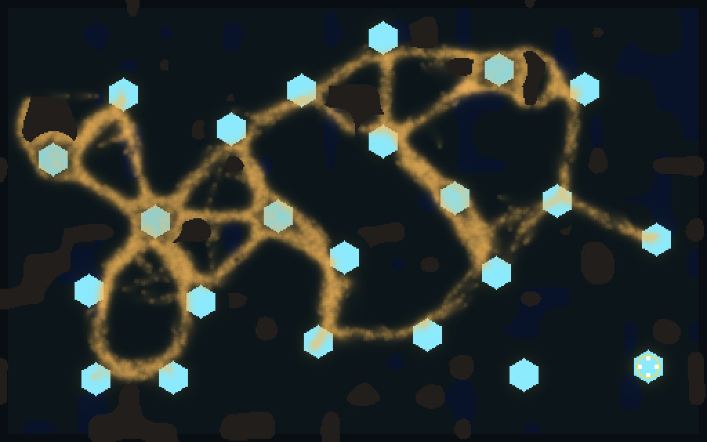<figcaption><b>450 s</b></figcaption></figure>
      <figure>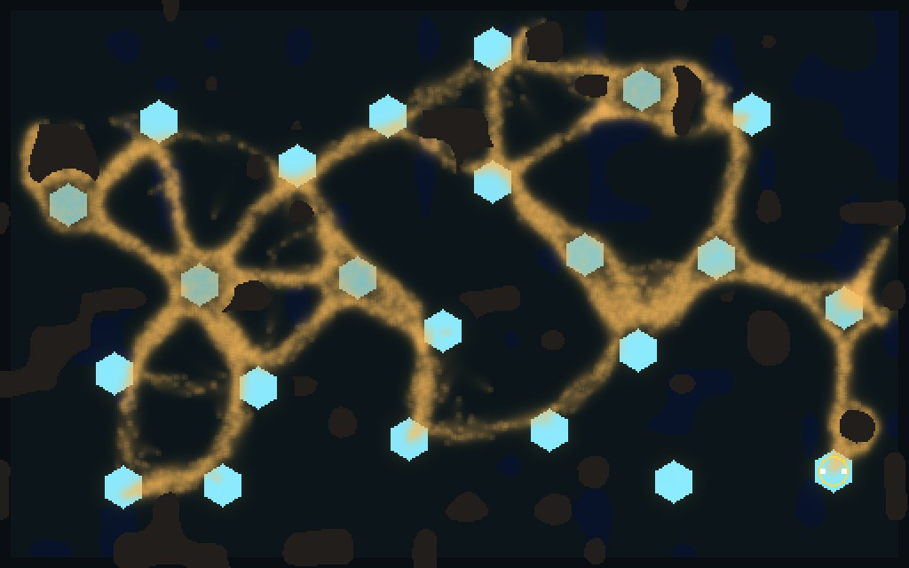<figcaption><b>900 s, the cap</b></figcaption></figure>
    </div>
    <p class="counts">Reached the cap with <b>2 of 4</b> soldiers alive and the bank spent on 196 defensive shots (225 walkers killed). The mould ended at <b>9,800</b> walkers on most of the map. Score <b>−0.417</b>. On the 16 held-out seeds idle lost every game and was wiped on 5 (274-432 s).</p>
  </section>

  <section>
    <span class="tag">Seed 5, farm</span>
    <h2>Farm the near crystals and defend them</h2>
    <div class="row">
      <figure>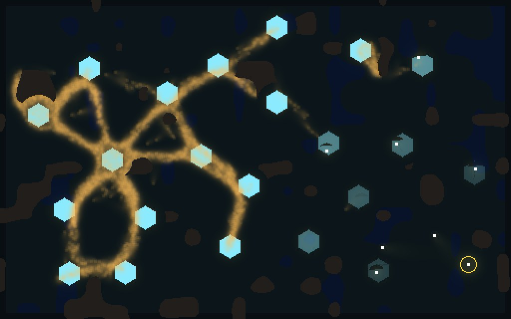<figcaption><b>150 s</b></figcaption></figure>
      <figure>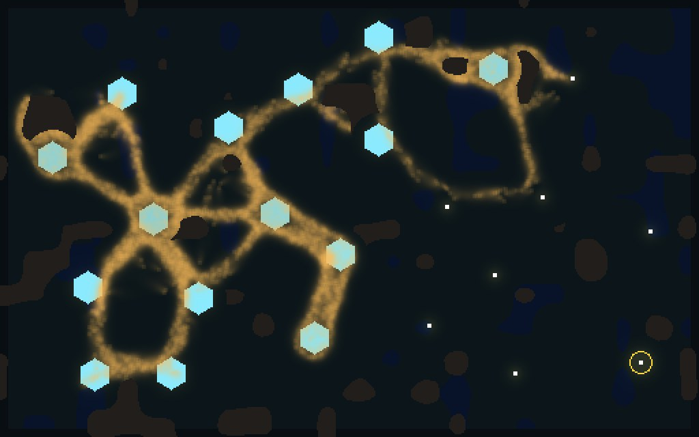<figcaption><b>450 s</b></figcaption></figure>
      <figure>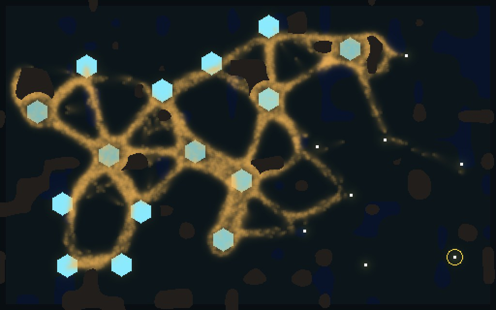<figcaption><b>900 s, the cap</b></figcaption></figure>
    </div>
    <p class="counts">Eight soldiers, <b>24,000</b> food harvested, 2,279 shots killing <b>4,485</b> walkers; the crystals near the larder are dark because the squad emptied them. The mould ended at 9,477. Score <b>−0.029</b>.</p>
  </section>

  <section>
    <span class="tag">Seed 5, wall</span>
    <h2>Farm, with a wall across the mould's road</h2>
    <div class="row">
      <figure>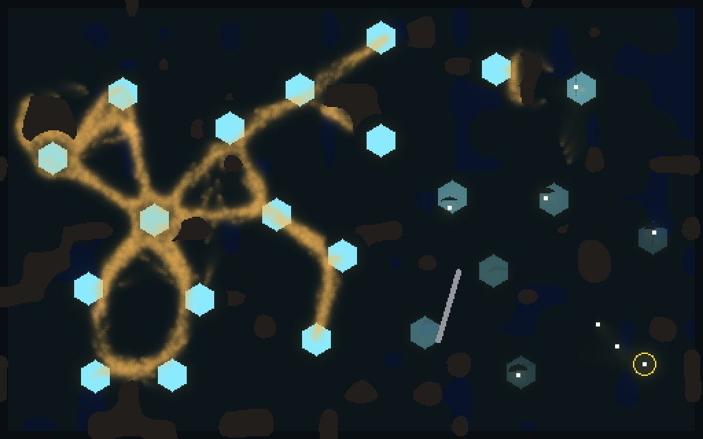<figcaption><b>150 s</b></figcaption></figure>
      <figure>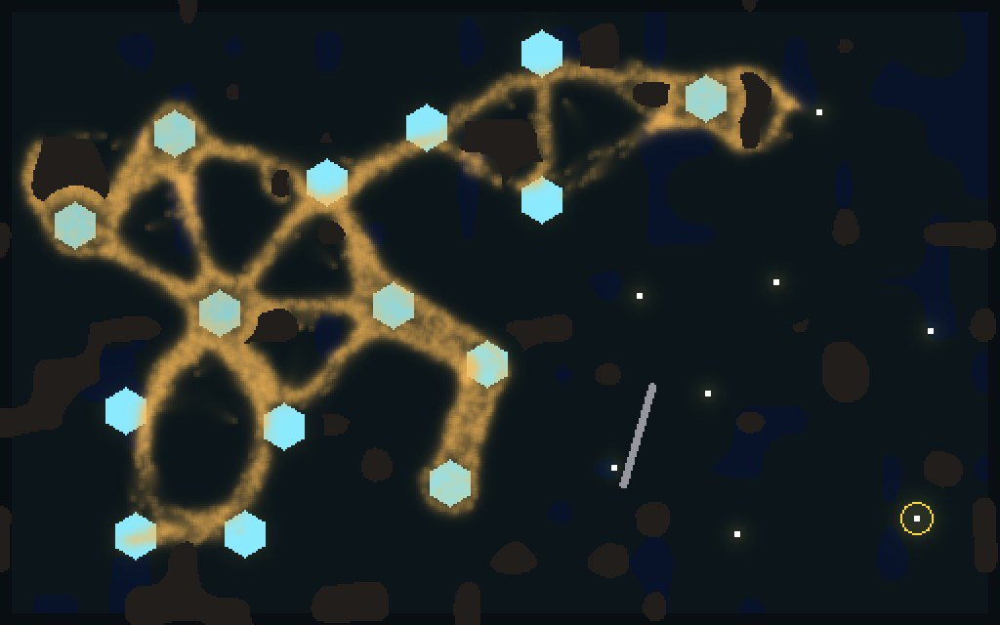<figcaption><b>450 s</b></figcaption></figure>
      <figure>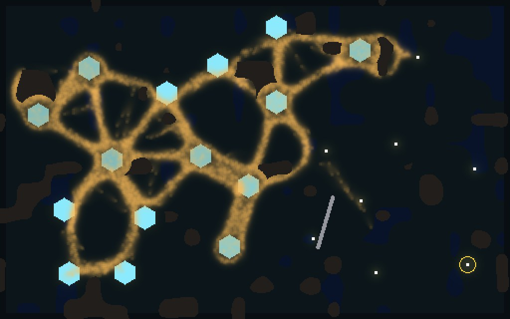<figcaption><b>900 s, the cap</b></figcaption></figure>
    </div>
    <p class="counts">Eight soldiers, <b>23,700</b> harvested, 1,604 shots killing 2,417, and <b>7,513</b> food left in the bank. The mould ended at 10,344. Score <b>−0.056</b>.</p>
  </section>

  <section>
    <span class="tag">Seed 5, random and rush</span>
    <h2>Random orders and an early rush both die</h2>
    <div class="pair">
      <figure>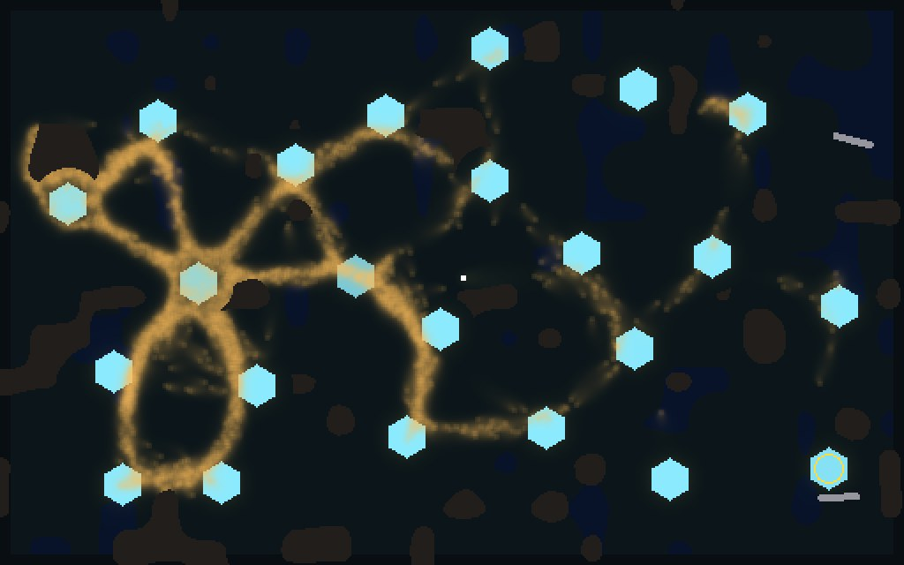<figcaption><b>Random, 150 s.</b> Wiped at 171 s. 68 shots killed 193; score −1.810.</figcaption></figure>
      <figure>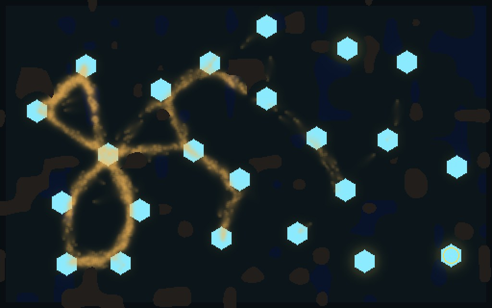<figcaption><b>Rush, 33 s.</b> Seven soldiers reach the core and kill <b>921</b> walkers. The mould is down to 1,448 when the bank runs dry and they die. Score −1.963.</figcaption></figure>
    </div>
  </section>

  <section>
    <span class="tag c">The fix the first census needed</span>
    <h2>Soldiers walk round rock and fire only where they can see</h2>
    <p>In the first census a rush of four killed 13 walkers with 80 shots. On seed 1, three soldiers had stopped behind rock 50 cells short of the mould's core and put 196 of their 200 shots into it. Now each soldier walks a distance map round rock and walls, and holds fire unless the line to its target is clear.</p>
    <div class="pair">
      <figure>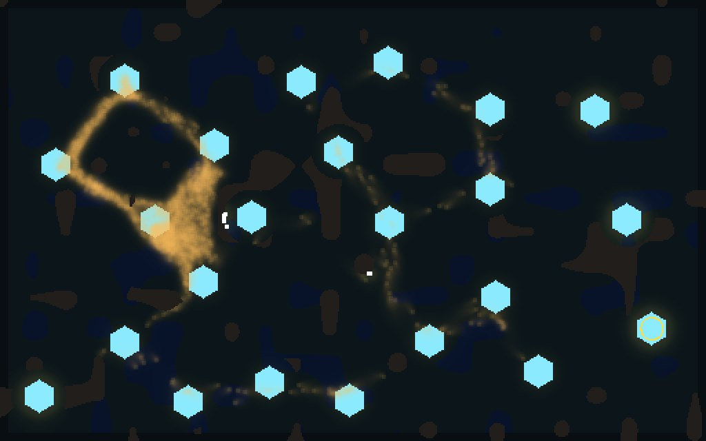<figcaption><b>Before, 30 s.</b> Three soldiers at the rock's edge right of the core, one stuck mid-map. Over 200 s: <b>13</b> walkers killed, 191 of 200 shots hit nothing.</figcaption></figure>
      <figure>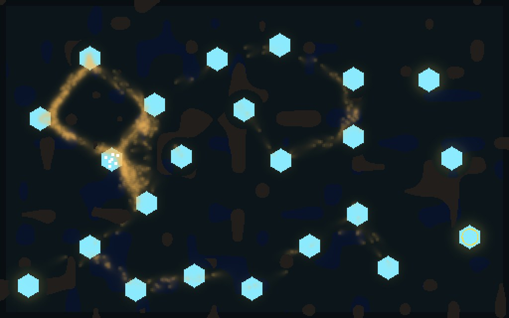<figcaption><b>After, 30 s.</b> All four on the core crystal. Over 200 s: <b>1,282</b> killed, no shot wasted.</figcaption></figure>
    </div>
  </section>

  <section>
    <span class="tag c">On the GPU</span>
    <h2>The same game runs on the engine</h2>
    <p>The game also runs on the GPU engine, with the same mould settings as the CPU world. Played side by side for 20 game seconds, the two moulds stay within 8% of each other, and a soldier farming a crystal banks the same 300 food on both. The window (W2c) is next, played on the GTX 1070.</p>
  </section>
</main>
